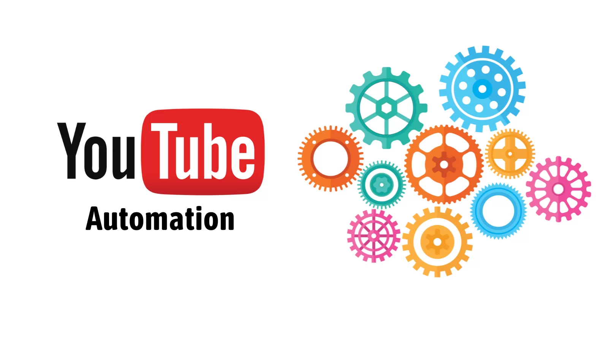
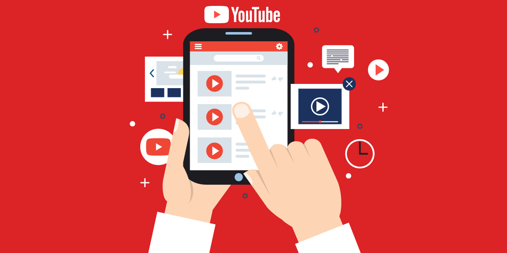

What is YouTube Automation
YouTube Automation refers to the use of technology, tools, software, or services that allow content creators to automate specific tasks related to managing a YouTube channel. This automation can streamline various processes, reduce the workload for creators, and enhance efficiency.
Common Tasks That Can Be Automated
YouTube Automation encompasses a wide range of tasks that can be automated to save time. These tasks include, but are not limited to:
- Uploading Videos: Automating the process of uploading videos at scheduled times.
- Scheduling Uploads: Planning content to be published in advance based on optimal times for engagement.
- Adding Descriptions and Tags: Automatically including video descriptions, tags, and relevant keywords to boost search visibility.
- Thumbnail Generation: Using tools to create or apply pre-designed thumbnails that are eye-catching and brand-aligned.
- Responding to Comments: Automating responses to common questions or thanking viewers for engagement.
- Analytics Monitoring: Automating the collection and analysis of key metrics like views, watch time, audience retention, and engagement rates.
How YouTube Automation Works
YouTube Automation typically involves the integration of third-party tools, scripts, or software platforms that interact with YouTube's API (Application Programming Interface). These tools allow creators to set parameters for automated tasks, often with minimal manual intervention. For instance, a content creator could use an automation tool to:
- Schedule weekly video uploads in advance.
- Auto-populate video descriptions and tags based on templates.
- Receive automated reports on channel performance metrics.
Some advanced tools use machine learning algorithms to optimize video titles, descriptions, and content strategy based on analytics data. This allows creators to focus more on the creative aspect while leaving time-consuming administrative tasks to automation software.
Pros and Cons of YouTube Automation
Advantages:
- Time-Saving: Automation allows creators to focus more on content creation rather than administrative tasks.
- Consistency: Videos can be scheduled to release at optimal times, ensuring consistency in publishing.
- Efficiency: Routine tasks, like adding descriptions and responding to common comments, can be automated.
Disadvantages:
- Loss of Personal Touch: Automated responses might feel impersonal, reducing engagement with the audience.
- Potential for Errors: Automation tools can sometimes misinterpret data, leading to incorrect video tags, descriptions, or responses.
- Costs: Premium tools for YouTube Automation can be costly, depending on the features and level of automation required.
Is YouTube Automation for Everyone?
While YouTube Automation can be a game-changer for large channels or businesses with a high volume of content, it might not be necessary for smaller creators. However, even those starting out may benefit from automating a few repetitive tasks, such as scheduling videos or tracking analytics.
For content creators looking to grow their channel and engage with a larger audience, implementing some degree of automation can help streamline their workflow, allowing more time for creativity and strategic planning.